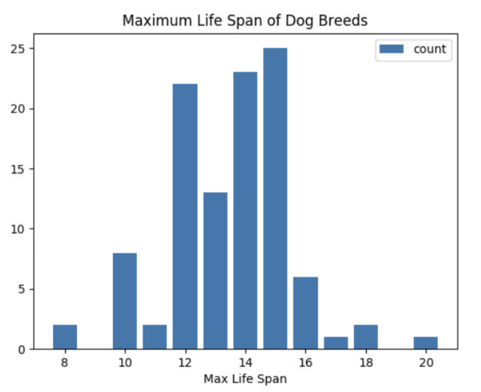
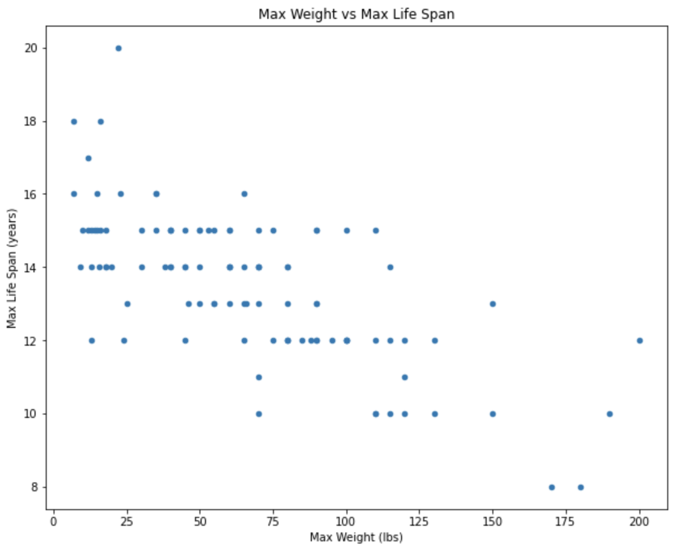
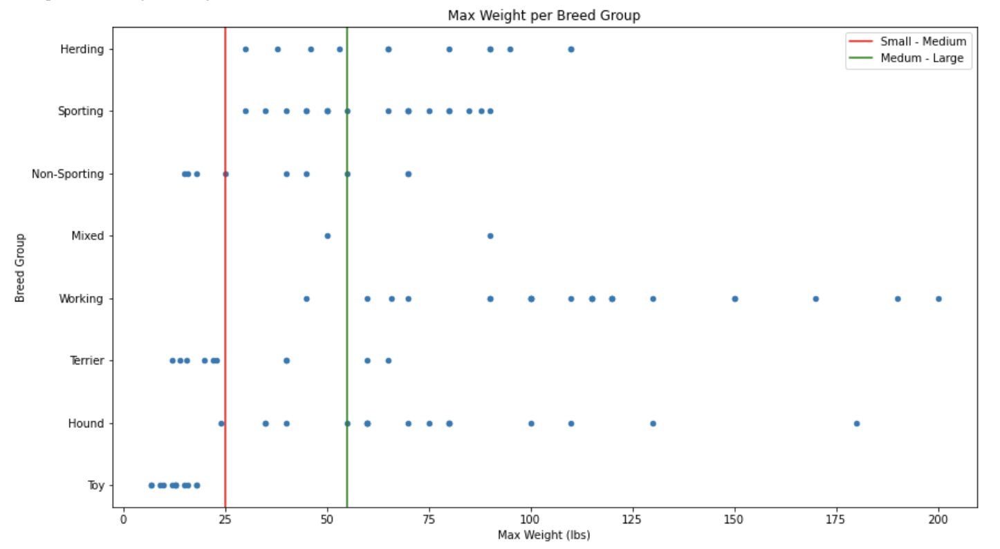
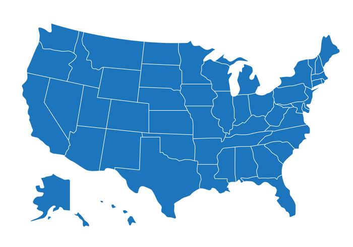
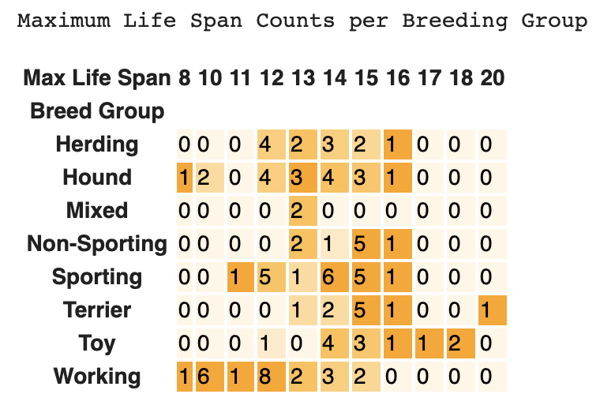
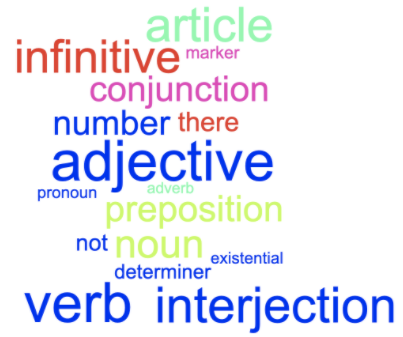

At the end of this lesson, you will be able to:
Here's the Max Life Span chart from the last lesson again. Can it tell you whether heavier breeds tend to have shorter life spans? Give it a shot.

It can't! A count chart (like a bar chart or a histogram) only looks at one column at a time, and this question is about how two columns relate to each other. So we need a chart that looks at both at once.
A scatter plot takes two numeric columns, puts one on each axis, and draws one dot for every row. That makes it the chart to reach for when you want to see whether two numbers move together, especially when they can take lots of different values, like weights or temperatures.
So what does the plot below suggest about maximum weight and maximum life span? Each dot is one breed. Take a minute with the plot (or its data table) before you read on. And watch out for dots that land in exactly the same spot, since one dot can be hiding several breeds.

| Breed | Breed group | Max Weight (lbs) | Max Life Span (years) |
|---|---|---|---|
| Maltese | Toy | 7 | 18 |
| Yorkshire Terrier | Toy | 7 | 16 |
| Japanese Chin | Toy | 9 | 14 |
| Silky Terrier | Toy | 10 | 15 |
| Norfolk Terrier | Terrier | 12 | 15 |
| Papillon | Toy | 12 | 17 |
| Affenpinscher | Toy | 13 | 12 |
| Chinese Crested | Toy | 13 | 14 |
| Havanese | Toy | 13 | 15 |
| Cairn Terrier | Terrier | 14 | 15 |
| Coton de Tulear | Non-Sporting | 15 | 16 |
| Italian Greyhound | Toy | 15 | 15 |
| Border Terrier | Terrier | 15.5 | 14 |
| Schipperke | Non-Sporting | 16 | 15 |
| Shih Tzu | Toy | 16 | 18 |
| Cavalier King Charles Spaniel | Toy | 18 | 14 |
| Lhasa Apso | Non-Sporting | 18 | 15 |
| Pug | Toy | 18 | 14 |
| Miniature Schnauzer | Terrier | 20 | 14 |
| West Highland White Terrier | Terrier | 22 | 20 |
| Bedlington Terrier | Terrier | 23 | 16 |
| Basenji | Hound | 24 | 12 |
| Boston Terrier | Non-Sporting | 25 | 13 |
| Cocker Spaniel (American) | Sporting | 30 | 15 |
| Pembroke Welsh Corgi | Herding | 30 | 14 |
| Beagle | Hound | 35 | 16 |
| Lagotto Romagnolo | Sporting | 35 | 16 |
| Whippet | Hound | 35 | 15 |
| Cardigan Welsh Corgi | Herding | 38 | 14 |
| American Eskimo Dog | Non-Sporting | 40 | 15 |
| Basset Bleu de Gascogne | Hound | 40 | 14 |
| Boykin Spaniel | Sporting | 40 | 14 |
| Glen of Imaal Terrier | Terrier | 40 | 15 |
| Soft Coated Wheaten Terrier | Terrier | 40 | 15 |
| American Water Spaniel | Sporting | 45 | 12 |
| Brittany | Sporting | 45 | 14 |
| German Pinscher | Working | 45 | 14 |
| Keeshond | Non-Sporting | 45 | 15 |
| Australian Kelpie | Herding | 46 | 13 |
| Alaskan Husky | Mixed | 50 | 13 |
| English Springer Spaniel | Sporting | 50 | 14 |
| Field Spaniel | Sporting | 50 | 15 |
| Spanish Water Dog | Sporting | 50 | 15 |
| Finnish Lapphund | Herding | 53 | 15 |
| Azawakh | Hound | 55 | 13 |
| Dalmatian | Non-Sporting | 55 | 13 |
| Welsh Springer Spaniel | Sporting | 55 | 15 |
| Afghan Hound | Hound | 60 | 13 |
| American Pit Bull Terrier | Terrier | 60 | 15 |
| Harrier | Hound | 60 | 15 |
| Pharaoh Hound | Hound | 60 | 14 |
| Plott | Hound | 60 | 14 |
| Samoyed | Working | 60 | 14 |
| Airedale Terrier | Terrier | 65 | 13 |
| Australian Shepherd | Herding | 65 | 16 |
| Belgian Tervuren | Herding | 65 | 12 |
| Vizsla | Sporting | 65 | 14 |
| English Shepherd | Working | 66 | 13 |
| Boxer | Working | 70 | 10 |
| Chow Chow | Non-Sporting | 70 | 15 |
| Eurasier | Non-Sporting | 70 | 14 |
| German Shorthaired Pointer | Sporting | 70 | 14 |
| Greyhound | Hound | 70 | 13 |
| Irish Setter | Sporting | 70 | 11 |
| Wirehaired Pointing Griffon | Sporting | 70 | 14 |
| American Foxhound | Hound | 75 | 15 |
| Golden Retriever | Sporting | 75 | 12 |
| Belgian Malinois | Herding | 80 | 14 |
| Bluetick Coonhound | Hound | 80 | 14 |
| Gordon Setter | Sporting | 80 | 12 |
| Labrador Retriever | Sporting | 80 | 13 |
| Redbone Coonhound | Hound | 80 | 12 |
| Rhodesian Ridgeback | Hound | 80 | 12 |
| Clumber Spaniel | Sporting | 85 | 12 |
| Bracco Italiano | Sporting | 88 | 12 |
| Alapaha Blue Blood Bulldog | Mixed | 90 | 13 |
| Briard | Herding | 90 | 12 |
| Chinook | Working | 90 | 15 |
| German Shepherd Dog | Herding | 90 | 13 |
| Giant Schnauzer | Working | 90 | 12 |
| Weimaraner | Sporting | 90 | 15 |
| Catahoula Leopard Dog | Herding | 95 | 12 |
| Alaskan Malamute | Working | 100 | 15 |
| Black and Tan Coonhound | Hound | 100 | 12 |
| Caucasian Shepherd (Ovcharka) | Working | 100 | 12 |
| Dogo Argentino | Working | 100 | 12 |
| Komondor | Working | 100 | 12 |
| Beauceron | Herding | 110 | 12 |
| Bloodhound | Hound | 110 | 10 |
| Bouvier des Flandres | Herding | 110 | 15 |
| Rottweiler | Working | 110 | 10 |
| Akita | Working | 115 | 14 |
| Great Pyrenees | Working | 115 | 12 |
| Kuvasz | Working | 115 | 10 |
| Akbash Dog | Working | 120 | 12 |
| Bernese Mountain Dog | Working | 120 | 10 |
| Cane Corso | Working | 120 | 11 |
| Bullmastiff | Working | 130 | 12 |
| Scottish Deerhound | Hound | 130 | 10 |
| Anatolian Shepherd Dog | Working | 150 | 13 |
| Newfoundland | Working | 150 | 10 |
| Leonberger | Working | 170 | 8 |
| Irish Wolfhound | Hound | 180 | 8 |
| Great Dane | Working | 190 | 10 |
| Boerboel | Working | 200 | 12 |
The same function that draws a scatter plot can also draw a range chart, which shows how spread out a numeric column is within each category. What do you think the chart below shows?

The vertical lines mark the thresholds used in this chart: small (< 25 lbs), medium (25–55 lbs), and large (> 55 lbs), based on each breed's recorded maximum weight. The table below summarizes the range within each group. To inspect individual values rather than just the endpoints, use the full table above.
| Breed group | Breed records | Lowest Max Weight (lbs) | Highest Max Weight (lbs) |
|---|---|---|---|
| Herding | 12 | 30 | 110 |
| Hound | 18 | 24 | 180 |
| Mixed | 2 | 50 | 90 |
| Non-Sporting | 9 | 15 | 70 |
| Sporting | 19 | 30 | 90 |
| Terrier | 10 | 12 | 65 |
| Toy | 12 | 7 | 18 |
| Working | 23 | 45 | 200 |
Look back at the weight-versus-life-span scatter plot. The dots drift downward as you move to the right, which means heavier breeds tend to have shorter maximum life spans. When two columns move together like this, either both going up together or one going up while the other goes down, we call it a correlation. Eyeballing a scatter plot can tell you there's a pattern worth looking into, but it isn't a measurement. And a scatter plot can show you things a simple "they move together" can't, like curves, clusters, and the odd dot sitting way off by itself.
Here's the trap, and it's one of the most important ideas in the unit: seeing that A and B move together tells you nothing, by itself, about why. There are always at least four explanations on the table:
The classic worked example: ice cream sales and drowning deaths rise and fall together, month after month, year after year. It's a strong, real correlation. So does ice cream cause drowning? Do drownings send grieving communities to the ice cream stand? Of course not. The confounder is warm weather. Hot summer days send people to the ice cream stand and into rivers and pools, so the two numbers rise together because summer causes both. A scatter plot of the two columns would show you a lovely trend and say nothing whatsoever about why.
So what do you do once you've found a pattern like that? You start asking questions. Which of the four explanations fits? What extra information would tell them apart? For ice cream and drowning, you might ask whether the correlation survives if you only compare days with the same temperature. If it weakens or vanishes, that supports temperature as an explanation. It still doesn't prove that every other relevant factor has been accounted for.
Here's a real one from right here in Portland. Researchers at Portland State University, led by Vivek Shandas, have mapped temperatures across the city on hot summer days and found differences of 12 to 15 degrees Fahrenheit between neighborhoods. The hottest neighborhoods tend to have less tree cover and more pavement, and they also tend to be lower-income. So if you made a scatter plot of tree cover against temperature, you'd see a clear pattern: more trees, cooler streets.
Does that prove trees cool neighborhoods? There's good reason to think so, because there's a physical mechanism (shade, and water evaporating from leaves). But the scatter plot alone couldn't tell you that, because income is tangled up with both columns: wealthier neighborhoods often have more trees and less pavement and industry. And notice the stakes. The people in the hottest neighborhoods often have the fewest resources for getting through a heat wave, which is part of why Portland has been working to plant more trees there.
The Week 8 Assignment asks for exactly this reasoning: when a pattern appears, lay out the possible explanations and identify the evidence needed to tell them apart. Practice on the dog data: why might heavier breeds live shorter lives? Which explanations are plausible, and what evidence would test them?
On your own or with a partner, open up the Dog Scatter Plot Colab Notebook and make a copy. Think of a question that plotting two columns against each other might answer, and then change the program to use the two columns you picked. What question are you trying to answer? Did the plot come out the way you expected, or did it surprise you? And are you assuming anything when you read it?

Now let's try a whole new dataset, this one full of facts about the 50 states. Again, you can work with a partner or on your own.Open up this States Colab Notebook and make a copy. Make the two scatter plots and answer the questions in the notebook.
Scatter plots need two quantitative columns. So what if one or both of the columns you care about are categories, like breed group? That's what the second chart in this lesson is for.
A crosstab (short for cross-tabulation) counts how many times each combination of values shows up in a dataset. So for breed group and maximum life span, it's a grid with one row for each group and one column for each life span, and each cell holds the number of breeds that have that combination. See what you can figure out from the crosstab below. Try these questions:
You can answer all of them from the chart. Here's how:

| Breed group | 8 years | 10 years | 11 years | 12 years | 13 years | 14 years | 15 years | 16 years | 17 years | 18 years | 20 years | Total |
|---|---|---|---|---|---|---|---|---|---|---|---|---|
| Herding | 0 | 0 | 0 | 4 | 2 | 3 | 2 | 1 | 0 | 0 | 0 | 12 |
| Hound | 1 | 2 | 0 | 4 | 3 | 4 | 3 | 1 | 0 | 0 | 0 | 18 |
| Mixed | 0 | 0 | 0 | 0 | 2 | 0 | 0 | 0 | 0 | 0 | 0 | 2 |
| Non-Sporting | 0 | 0 | 0 | 0 | 2 | 1 | 5 | 1 | 0 | 0 | 0 | 9 |
| Sporting | 0 | 0 | 1 | 5 | 1 | 6 | 5 | 1 | 0 | 0 | 0 | 19 |
| Terrier | 0 | 0 | 0 | 0 | 1 | 2 | 5 | 1 | 0 | 0 | 1 | 10 |
| Toy | 0 | 0 | 0 | 1 | 0 | 4 | 3 | 1 | 1 | 2 | 0 | 12 |
| Working | 1 | 6 | 1 | 8 | 2 | 3 | 2 | 0 | 0 | 0 | 0 | 23 |
| Total | 2 | 8 | 2 | 22 | 13 | 23 | 25 | 6 | 1 | 2 | 1 | 105 |
So, to sum up: a crosstab counts how often each pair of values from two columns shows up together. That makes it good for finding the most and least common combinations, and for spotting patterns across two columns, especially when one or both of them hold categories (like breed group) or a small number of whole-number values (like life spans in years). Where it falls apart is when a column has lots of different values. Imagine a crosstab of breed group against maximum weight, with a separate column for every single weight in the dataset! For that, you'd want to group the weights into bins first, just like a histogram does.
Seaborn, the chart library we met in Lesson 1, can turn a crosstab into a heatmap, where each cell gets colored according to its count. Your eye finds the dark and light patches much faster than it finds the big and small numbers in a plain grid.
Open this Dogs Crosstab Colab Notebook and make a copy. Run it to see how it works. What other questions can you answer about the breed groups?
To look at a different column, swap its name in like this:
counts = pd.crosstab(index=df["Breed Group"], columns=df["Max Life Span"], margins=True)
print(counts.to_string())Change the column name after columns= to explore something else. The notebook also prints the counts as a plain table, so you can read the exact numbers without having to judge the colors.

For one more practice round, on your own or with a partner, dig into a new dataset, this one about popular words and their parts of speech. Open up this Words Colab Notebook and make a copy. Fill in the columns to make the crosstab chart, and then answer the questions in the notebook.And as always, if you get stuck on any of these notebooks, post your question in the Ask Questions! discussion.
Coming up next: From Question to Conclusion puts the whole process together: cleaning messy data, choosing a chart, and saying what it shows.